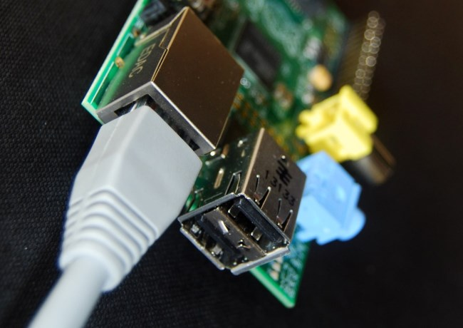

컴퓨터 네트워킹(Networking)
들어가며
이번 과정은 라즈베리 파이 네트워킹(networking) 소개과정으로 고안되었다. 이번 과정을 통해서 다양한 네트워크를 설정하고 사용할 것이며, 실습을 통해서 기본적인 네트워킹에 대해서도 학습할 것이다.
라즈베리파이 재단 공식 웹사이트 RASPBERRY PI NETWORKING 기반으로 학습을 시작한다.
네트워킹 과정을 통해서 다음을 배우게 됩니다.
- 두개 이상의 라즈베리 파이를 네트워크를 통해 연결해 통신하는 방법
- 한 라즈베리 파이 프로그램을 작성해서 또 다른 라즈베리 파이로 메시지를 전송하는 방법
- 네트워크를 통해서 하드웨어를 제어하는 방법
- 네트워크 설정하고 서버 구축하는 방법
- 기초 네트워킹 개념
- IP 주소 (IP address)
- 서버와 클라이언트 (Servers and Clients)
- 동적 호스트 구성 프로토콜(Dynamic Host Configuration Protocol, DHCP)
- 도메인 네임 시스템 (Domain Name System, DNS)

라즈베리 파이 네트워킹(Networking)
필요한 준비물
라즈베리 파이를 가진 학생 각각 혹은 짝을 지어 수행하는 것을 권장한다. 각 라즈베리 파이가 첫번째 학습에서 다른 학생 라즈베리 파이에 연결되어야 되어서 짝수 라즈베리 파이가 필요하다. 각 학생 혹은 짝을 이룬 학생은 다음 기구물에 접근할 수 있어야 한다.
- 다음 환경 설정이 된 라즈베리 파이
- 라즈비언 운영체제가 탑재된 최신 NOOBS SD 카드
network.py와thing-client.py파이썬 파일을 SD 카드에 복사한다.- 키보드, 마우스, 모니터(혹은 TV)
- 두 라즈베리 파이를 연결하는 네트워크 케이블
- 연결부분이 암놈-암놈 연결선 4개와 LED 1개 (두번째 수업용)
학습주제
- 네트워크를 통해 메시지 전송
- 사전에 동영상을 학습하고 수업에 참석한다.
- 네트워크로 하드웨어 제어
- 동적 호스트 구성 프로토콜
- 도메인 네임 시스템